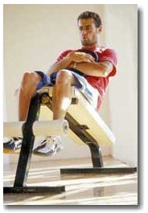
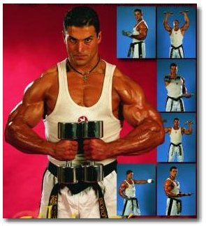

|
EMPRESA DE VIGILANCIA INTEGRAL PRIVADA "E.V.I.P. POSEIDON" COCHABAMABA BOLIVIA 
|

|
| inicio | Teléfonos Emergencia | Introducción | Información del Servicio | Supervisión | Precios | Personal | Contáctenos |

SEGURIDAD
PROYECTO
ASISTENCIA A:
LAS 24 HORAS!!! |
Volver atras
Preparación física del Vigilante"Más vale maña que fuerza" dice el adagio popular. Esto se aplica también a un agente de seguridad. Si un gesto de inusual nerviosismo delata a un delincuente se debe desarmarlo antes de tener que batirse a plomo con él. 
De igual forma, si los demás empleados de la empresa (al que presta servicios) pueden ser sus aliados, por supuesto que llegado cierto punto, el que está armado y entrenado para defender es usted. Así pasamos a la preparación física y el entrenamiento. Físicamente, un vigilante esta casi tan preparado como un deportista de élite. Tiene la fortaleza como para enfrentarse cuerpo a cuerpo si es estrictamente necesario. 
También tiene la agilidad. Es posible que en algún momento tenga que correr tras un delincuente. Piense, por ejemplo, en el caso de los agentes que custodian zonas residenciales. Si una infortunada noche descubre a uno solo o a un grupo de delincuentes caminando por el techo o intentando ingresar a una vivienda, lo más probable es que éstos intenten huir y tendrá que perseguirlos.
Si la situación se complica, entonces el vigilante debe ir más allá en el uso de sus habilidades. Quizá la más importante de ellas es la puntería. Para mantenerla siempre afinada, debe practicar constantemente. |